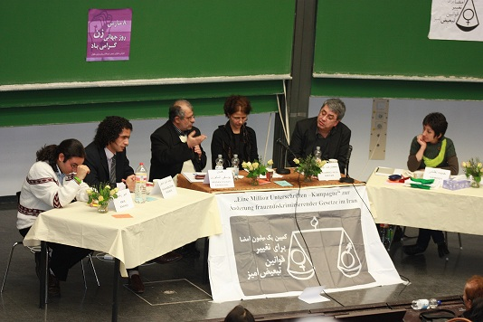

|
|
نشست "روشنفکری دینی - تفکر سکولار و حقوق زن در ایران" در دانشگاه بوخوم آلمان
دو شنبه16 اسفند 1389
نشست "روشنفکری دینی - تفکر سکولار و حقوق زن در ایران، از نظریه تا عمل" به مناسبت روز زن، شنبه چهاردهم اسفندماه در دانشگاه بوخوم آلمان برگزار شد.
به گزارش کمپین یک میلیون امضا شاخه آلمان، این نشست به مناسبت گرامیداشت صدمین سالگرد روز جهانی زن و با هدف ایجاد چالش نظری بین دو تفکر سکولار و روشنفکری دینی در حوزه حقوق زن و بحث و تبادل نظر و به چالش کشیدن حوزه نظر با عمل و بررسی جایگاه مردان در جنبش زنان، با حضور اندیشمندان از هر دو حوزه فکری و سه فعال کمپین یک میلیون امضا برپا شد.

در بخش اول این نشست فعالین کمپین در یک حرکت جدید در دو بخش نظری و عملی برای اولین بار به بررسی حضور مردان در جنبش زنان و بالاخص کمپین یک میلیون امضا در ایران پرداختند و با بیان تجربیات عملی، حضور مردان در کمپین را به عنوان یکی از بازوهای فعال در کمپین مورد بررسی قرار دادند. موضوعی که تا پیش از این کمتر به آن پرداخته شده بود.
بازخوانی تعاریف فمینیسم و خاستگاه آن، بررسی جایگاه مردان به عنوان عامل تبعیض و هم عامل رفع تبعیض از زنان و توجه به جامعه ای دو جنسیتی و لزوم همراهی زنان و مردان در رفع این تبعیضها به صورت توامان، از مباحث مطرح شده در بخش نظری این بخش بود.
همچنین بررسی تجربه عملی حضور مردان کنشگر در کمپین به عنوان تجربه ای جدید در جنبش زنان ایران مورد بررسی قرار گرفت. تا پیش از تجربه کمیته مردان کمپین یک میلیون امضا، ، مردان برابری طلب نه به عنوان کنشگر بلکه تنها به عنوان حامیان جنبش زنان حضوری کمرنگ در این جنبش داشتند. در این بخش به نگاه ابهام آمیز و توام با بدبینی نسبت به حضور مردان در کمپین به عنوان فعال جنبش زنان از طرف برخی فعالان حقوق زن و افکار عمومی جامعه پرداخته شد.
استقبال از همکاری کنشگران مرد توسط کنشگران زن جوان در مقایسه با نسل پیشین زنان فعال جنبش زنان، به عنوان یک جهش در راستای ارتقای شیوه فعالیت جنبش، از موارد مطرح شده در این نشست بود.
شهاب الدین شیخی (فعال کمپین یک میلیون امضا و ژورنالیست)، امیر رشیدی (فعال کمپین یک میلیون امضا و حقوق بشر ) و حمیده نظامی (فعال کمپین یک میلیون امضا و ژورنالیست)، برگزاری این قسمت را به عهده داشتند.
در بخش دوم این سمینار، حسن یوسفی اشکوری (اسلام شناس) و محمدرضا نیکفر (فیلسوف) به بررسی مسئله حقوق زن در اسلام پرداختند.
در ابتدا یوسفی اشکوری به عنوان نماینده روشنفکری دینی به بررسی جایگاه زن در اسلام پرداخت.
وی با توجه به نظام خانواده کهن در جوامع اسلامی که برساخته ذهن و زبان فقیهان مسلمان و مبتنی بر ولایت و قوامیت مرد است به جایگاه فرودست و غیر مختار زن پرداخت که از نظر او اساس آن بر تبعیض بنا نهاده شده است.
اشکوری راه کار برون رفت از قرائت سنتی دین را بازخوانی دوباره اسلام و ساخت بنای تازه¬ای در چهارچوب سیستم ارزشی قرآنی و توحیدی، با توجه به مصادیق عدالت و مفهوم حق در جهان معاصر دانست و بیان کرد که در این ساختار زنان از حقوق برابر با مردان برخوردارند.
سخنران دوم این بخش محمدرضا نیکفر به عنوان نماینده تفکر سکولار، به نقد اندیشه یوسفی اشکوری پرداخت و اشاره کرد که این نگرش در روشنفکری دینی خواهان گسست از اسلام تاریخی است؛ در حالیکه که وی با تکیه بر اسلام تاریخی یعنی تجربه زیسته اسلام در یک فرایند تاریخی، اسلام را شامل مجموعه ای از تبعیضها میداند که یکی از وجوه این تبعیضها نابرابری در حوزه زنان است.
وی اظهار داشت بر اساس مستندات تاریخی هیچ شواهدی مبنی بر اینکه اسلام موجب ارتقاء جایگاه زن باشد، نداریم؛ در حالیکه در مقابل با مجموعه ای از دستورات اسلامی مواجه ایم که به نابرابری جنسیتی به نفع مرد مشروعیت می¬بخشد. نیکفر در پایان بیان کرد که سکولاریزاسیون در جوامع اسلامی در نهایت به رهایی زن خواهد انجامید.
همچنین در میزگرد بخش سوم با حضور دو اندیشمند و سه فعال کمپین، به بررسی مشکلات نظری و عملی دستیابی به برابری جنسیتی در ایران و ارائه راه کارهایی برای این مهم پرداخته شد.
مشروح گزارش این نشست به زودی منتشر خواهد شد.